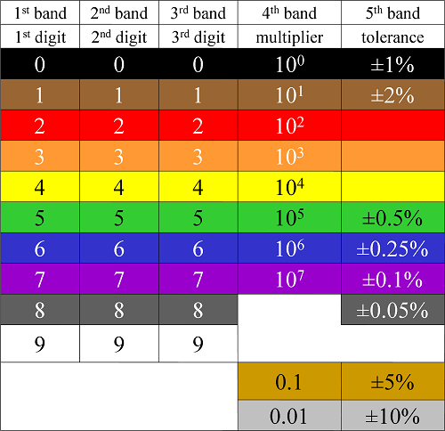

Resistor Values Calculator
This is a response to a Code Gallery request. The example is a Resistor Value calculator.

A resistor is a passive two-terminal electrical component that implements electrical resistance as a circuit element. The current through a resistor is in direct proportion to the voltage across the resistor's terminals. Thus, the ratio of the voltage
applied across a resistor's terminals to the intensity of current through the circuit is called resistance. This relation is represented by Ohm's law: I = V/R
where I is the current through the conductor in units of amperes, V is the potential difference measured across the conductor in units of volts, and R is the resistance of the conductor in units of ohms. More specifically, Ohm's law states that the R in this
relation is constant, independent of the current. Resistors are common elements of electrical networks and electronic circuits and are ubiquitous in electronic equipment. Practical resistors can be made of various compounds and films, as well as resistance
wire (wire made of a high-resistivity alloy, such as nickel-chrome). Resistors are also implemented within integrated circuits, particularly analog devices, and can also be integrated into hybrid and printed circuits.
The electrical functionality of a resistor is specified by its resistance: common commercial resistors are manufactured over a range of more than nine orders of magnitude. When specifying that resistance in an electronic design, the required precision of the
resistance may require attention to the manufacturing tolerance of the chosen resistor, according to its specific application. The temperature coefficient of the resistance may also be of concern in some precision applications. Practical resistors are also
specified as having a maximum power rating which must exceed the anticipated power dissipation of that resistor in a particular circuit: this is mainly of concern in power electronics applications. Resistors with higher power ratings are physically larger
and may require heat sinks. In a high-voltage circuit, attention must sometimes be paid to the rated maximum working voltage of the resistor.
Practical resistors have a series inductance and a small parallel capacitance; these specifications can be important in high-frequency applications. In a low-noise amplifier or pre-amp, the noise characteristics of a resistor may be an issue. The unwanted inductance,
excess noise, and temperature coefficient are mainly dependent on the technology used in manufacturing the resistor. They are not normally specified individually for a particular family of resistors manufactured using a particular technology.[1] A family of
discrete resistors is also characterized according to its form factor, that is, the size of the device and the position of its leads (or terminals) which is relevant in the practical manufacturing of circuits using them.
